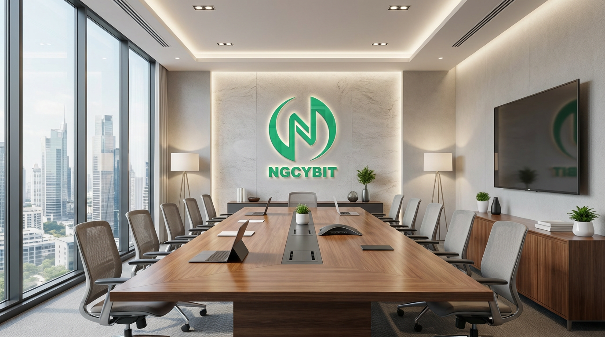
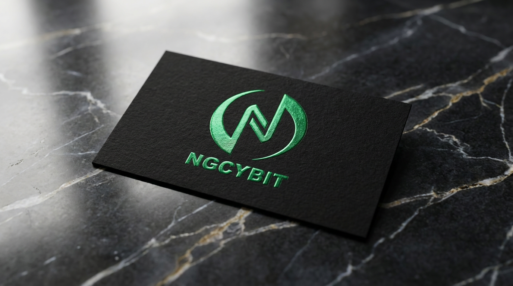
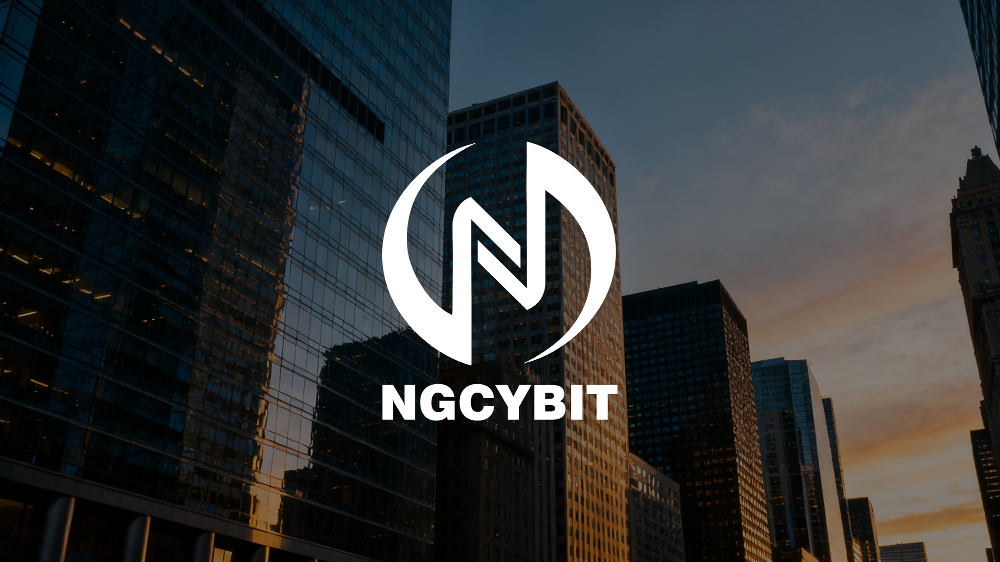
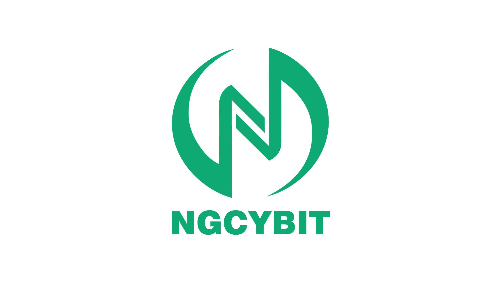
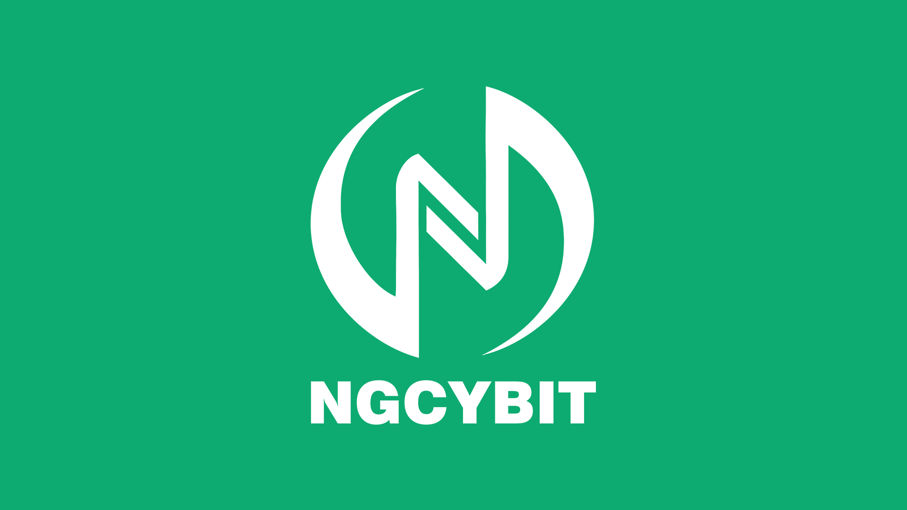
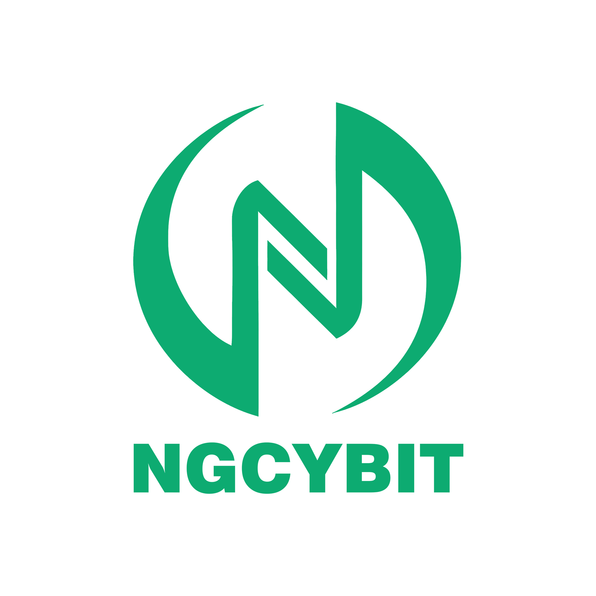

Clarity
Information should answer the user's immediate question, use consistent language, and lead naturally to the next relevant detail.
About NGCYBIT Exchange
NGCYBIT Exchange is shaped by a simple belief: digital asset technology becomes more useful when people can understand the information, controls, and responsibilities around it.
Our perspective
The digital asset sector moves quickly, but users still need time to understand a decision. NGCYBIT Exchange brings structure to that process through organized public information, consistent platform concepts, and educational resources that explain how market tools work.
Our vision combines speed, simplicity, transparency, and technology. These ideas are not isolated features. They shape the whole journey: how a visitor learns, how an interface presents choices, how activity is recorded, and how changes are communicated.
NGCYBIT Exchange does not treat access as a substitute for judgment. The platform perspective recognizes volatility and uncertainty, encouraging every user to research independently and choose only actions suited to personal circumstances.
The NGCYBIT standard
Information should answer the user's immediate question, use consistent language, and lead naturally to the next relevant detail.
Interfaces should organize complexity through hierarchy and familiar patterns while keeping essential context visible.
Public explanations, status communication, records, and risk information should form one coherent account of the service.
Technology should evolve through deliberate testing, monitoring, feedback, and evidence of real value for users.
How we think
A well-designed experience supports different levels of knowledge without forcing every visitor through the same path. NGCYBIT Exchange uses layered information so readers can begin simply and explore details when they matter.
Understand the purpose, language, and overall platform approach.
Build knowledge of markets, security, risks, and digital asset tools.
Compare public information with personal needs and responsibilities.
Use records, updates, and continued education to keep decisions informed.
NGCYBIT Exchange environments
Every expression of the brand follows the same principles: precise, approachable, and quietly confident.






